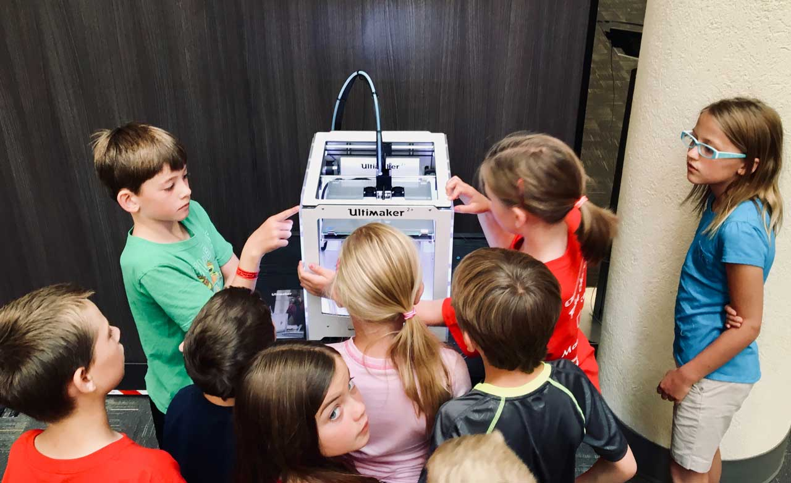

<!DOCTYPE html>
<html lang="en">
  <head>
    <meta charset="UTF-8" />
    <meta http-equiv="X-UA-Compatible" content="IE=edge" />
    <meta name="viewport" content="width=device-width, initial-scale=1.0" />
    <meta
      name="description"
      content="The Community Science Museum is a place where all young interested minds come together to learn and share knowledge."
    />
    <link
      rel="stylesheet"
      href="https://use.fontawesome.com/releases/v5.15.4/css/all.css"
      integrity="sha384-DyZ88mC6Up2uqS4h/KRgHuoeGwBcD4Ng9SiP4dIRy0EXTlnuz47vAwmeGwVChigm"
      crossorigin="anonymous"
    />
    <link rel="preconnect" href="https://fonts.googleapis.com" />
    <link rel="preconnect" href="https://fonts.gstatic.com" crossorigin />
    <link
      href="https://fonts.googleapis.com/css2?family=Julius+Sans+One&family=M+PLUS+Rounded+1c:wght@300;500&family=Viga&display=swap"
      rel="stylesheet"
    />
    <link href="/styles.css" rel="stylesheet" />
    <title>Home | Community Science Museum</title>
  </head>
</html>

<body>
  <header>
    
    <label for="hamburger-menu"><i class="far fa-grin-alt"></i></label>
    <input type="checkbox" id="hamburger-menu" />
    <nav>
      <ul>
        <li>
          <a class="menu-text" href="/exhibition-spaces.html">EXHIBITS</a>
        </li>
        <li><a class="menu-text" href="/explore.html">EXPLORE</a></li>
        <li><a class="menu-text" href="/special-events.html">EVENTS</a></li>
        <li><a class="menu-text" href="/about.html">ABOUT US</a></li>
        <li><a class="menu-text" href="/visit.html">VISIT</a></li>
      </ul>
    </nav>
  </header>
  <main>
    <section class="infobox">
      <h1>EXPLORE TOGETHER</h1>
      <p>
        Are you a young person looking to learn more about science? Come on down
        to our museum, there’s plenty to see and do. You can learn about
        Newtonian physics from our bumper swing, or why not travel back in time
        and meet our resident Woolly Mammoth? Our exhibits are designed to be
        accessible for interested minds, so make sure you come ready to learn
        and explore.
      </p>
    </section>
    <section class="explore-section lightblue-bg container">
      
      <div>
        <h2>ALL STARS CLUB</h2>
        <p>
          Young Stars club is for interested minds who are eager to learn. The
          club takes place once a week every Saturday between 10:00 and 13:00
          and here you’ll get to explore and experiment with our team of
          experts.
        </p>
        <p>
          If you’re interested in joining our team please send us an email at
          ppp@email.com for information.
        </p>
      </div>
    </section>
    <section class="explore-section lightblue-bg container">
      
      <div>
        <h2>ALL STARS CLUB</h2>
        <p>
          Young Stars club is for interested minds who are eager to learn. The
          club takes place once a week every Saturday between 10:00 and 13:00
          and here you’ll get to explore and experiment with our team of
          experts.
        </p>
        <p>
          If you’re interested in joining our team please send us an email at
          ppp@email.com for information.
        </p>
      </div>
    </section>
    <section class="explore-section darkblue-bg">
      <h2>FOR TEACHERS</h2>
      <p>
        Young Stars club is for interested minds who are eager to learn. The
        club takes place once a week every Saturday between 10:00 and 13:00 and
        here you’ll get to explore and experiment with our team of experts.
      </p>
      <p>
        If you’re interested in joining our team please send us an email at
        ppp@email.com for information.
      </p>
    </section>
    <section class="explore-section darkblue-bg">
      <h2>FOR TEACHERS</h2>
      <p>
        Young Stars club is for interested minds who are eager to learn. The
        club takes place once a week every Saturday between 10:00 and 13:00 and
        here you’ll get to explore and experiment with our team of experts.
      </p>
      <p>
        If you’re interested in joining our team please send us an email at
        ppp@email.com for information.
      </p>
    </section>
    <section class="infobox">
      <h1>GET INVOLVED</h1>
      <p>
        Are you a young person looking to learn more about science? Come on down
        to our museum, there’s plenty to see and do. You can learn about
        Newtonian physics from our bumper swing, or why not travel back in time
        and meet our resident Woolly Mammoth? Our exhibits are designed to be
        accessible for interested minds, so make sure you come ready to learn
        and explore.
      </p>
      <div class="lightblue"><p>DONATE</p></div>
      <div class="darkblue"><p>VOLUNTEER</p></div>
      <div class="darkblue-bg"><p>INTERNSHIP</p></div>
    </section>
  </main>
</body>
